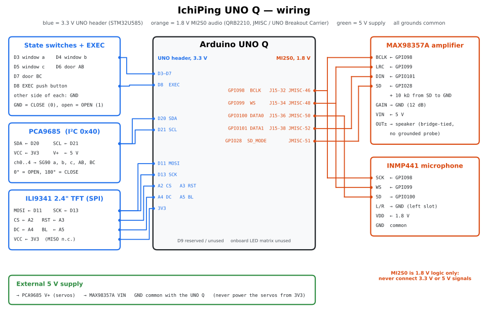

Hardware and wiring
UNO Ping uses one speaker and one microphone to classify five openings of a model apartment. The UNO Q MCU drives the switches, servos and TFT; the Linux side drives the audio bus.

Bill of materials
| Qty | Part | Role / notes |
|---|---|---|
| 1 | Arduino UNO Q (4 GB) | Qualcomm QRB2210 MPU (Debian) + STM32U585 MCU (Zephyr) |
| 1 | UNO Breakout Carrier (or JMISC access) | exposes the 1.8 V MI2S0 audio pins, which are not on the UNO header |
| 1 | INMP441 I²S MEMS microphone | MI2S0 DATA0, L/R = GND, VDD = 1.8 V |
| 1 | MAX98357A I²S class-D amplifier | MI2S0 DATA1, GAIN = GND (12 dB), VIN = 5 V, SD = SoC GPIO 28 |
| 1 | Small speaker (4–8 Ω) | driven by the MAX98357A (bridge-tied output) |
| 1 | 10 kΩ resistor | MAX98357A SD to GND (keeps the amplifier off when GPIO 28 is not driven) |
| 1 | PCA9685 16-channel PWM driver | I²C address 0x40 |
| 5 | SG90 micro servos | open/close window a, b, c and door AB, BC |
| 1 | ILI9341 2.4" SPI TFT, 320 × 240 | inference / actual state display |
| 5 | Toggle switches | requested state of each opening (to GND) |
| 1 | Push button | EXEC (start one inference) |
| 1 | 5 V supply for servos and amplifier | common GND with the UNO Q |
| 1 | Model apartment | three rooms in a row, three windows, two inner doors |
| as needed | Pipe material | frame / supports for the model house |
| as needed | 3D-printed brackets | hold the acrylic panels of the model house |
Wiring diagram

The diagram is generated by tools/make_wiring_diagram.py (SVG for this site, PNG for Hackster).
Shield boards
The audio and TFT shields (board/Ichiping uno q.eprj2, EasyEDA Pro) were designed by an AI assistant as an experiment. The schematic drawings are not very tidy or easy to read, but the circuits are electrically correct: the boards were manufactured, assembled and run the complete system.
MCU side (UNO header, 3.3 V)
| UNO Q pin | Connection | Notes |
|---|---|---|
| D3 / D4 / D5 / D6 / D7 | switches for window a, b, c, door AB, BC | INPUT_PULLUP; GND = CLOSE (0), open = OPEN (1) |
| D8 | EXEC push button to GND | Low = pressed |
| D20 / SDA, D21 / SCL | PCA9685 SDA / SCL | address 0x40; channels 0–4 = a, b, c, AB, BC |
| D11 (MOSI), D13 (SCK) | ILI9341 SPI | write-only, D12/MISO not connected |
| A2 / A3 / A4 / A5 | ILI9341 CS / RST / DC / BL | same wiring as the original IchiPing shield |
| 3V3 | ILI9341 VCC, PCA9685 VCC | logic only — never power servos from 3V3 |
Servo angles: 0° (PCA9685 tick 102) = OPEN, 180° (tick 553) = CLOSE. Servo power comes from the external 5 V rail; all grounds are common.
The pin-level wiring diagram (switches, EXEC, PCA9685, TFT and the 5 V rail) is in gpio_wiring.html.
Linux side (MI2S0 audio, 1.8 V)
The QRB2210 primary MI2S bus runs at 48 kHz, stereo, 32-bit slots (24 significant bits). It is reached through JMISC or the UNO Breakout Carrier.
| Signal | SoC GPIO | Device pin |
|---|---|---|
| BCLK / SCK | 98 | MAX98357A BCLK, INMP441 SCK |
| WS / LRC | 99 | MAX98357A LRC, INMP441 WS |
| DATA0 (capture) | 100 | INMP441 SD |
| DATA1 (playback) | 101 | MAX98357A DIN |
| Amplifier shutdown | 28 | MAX98357A SD, with 10 kΩ to GND |
Safety rules used throughout the project:
- MI2S0 is a 1.8 V interface: never connect 3.3 V or 5 V signals to it.
- Power the microphone and amplifier before connecting their signal lines; change wiring only with power off.
- The MAX98357A output is bridge-tied: never connect a grounded probe to OUT+/OUT−.
The audio bus needs a Device Tree overlay and ALSA routing on the Linux side; see Software architecture and uno_q/audio/README.md.